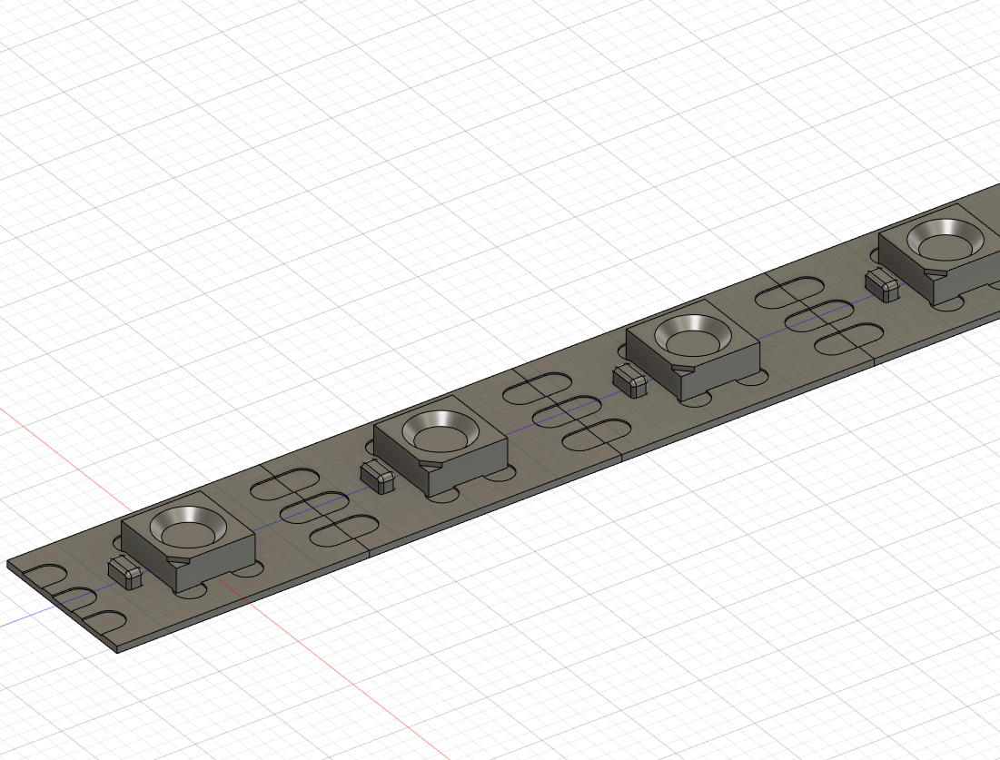

I have already been using Fusion 360 for a couple of years, so this peice of software wasn't new to me. I use Fusion for making design sketches of projects and prototyping 3D printed parts to connect different aspects of the projects. Fusion's sketch-based approach and timeline feature made it easy for me to learn and kept it versatile to changes in dimensions or design. Here is the tutorial I learned from. Since I have already been using Fusion, I decided to focus on learning 2 areas of Fusion I haven't used much: Model parameters and Constraints
A sample component construction I have made
Both of these features were easy to understand and pick up, but drastically changed my workflow while sketching. Constraints were helpful as I could just draw the basic shape I needed, then get the proportions, angles, sizes, location of parts correct by constraining them to eachother. I particuarly found the mirror/symmetry, coincident, midpoint, and fix contraints useful to position objects. Since Fusion also automatically makes constraints, I sometimes had to delete useless constraints that were blocking new, helpful constraints from being added.
A sketch with constraints and construction lines
Parameters were fun to learn, but ended up being less helpful to modeling real-life objects than I expected. As parameters are intended to make a model parametric, or able to be changed, they weren't as useful for static objects that wouldn't be changed as they weren't my own design. I found parameters most useful in the 2 models I made to reference dimensions across multiple places in the timeline, making my work easier to follow. I also started directly using all inputed dimensions as parameters for functions like extrude (As seen here) by typing the name of the dimension in (Ex: d13 for the 13th dimension). I was able to make good use of parameters to make my strip of LEDs have a user-defined amount of LEDs.
A fillet set to half the width of the rectangle, so the end is always a semicircle
Here are my final models for the assignment. They are both based on extruded sketches that were then combined into one object.
AA Battery Holder
LED Strip
